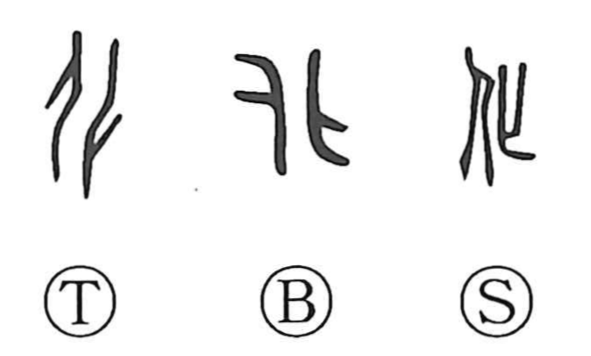

Explanation
化 sets human figures back to back, their heads and feet turned in opposite directions. The inverted figure, 匕, represents a dead person. Reversing the body's posture gives a visible image of losing vital breath and passing into death.
From this transformation come changing, dying, and becoming something else. Life and death are successive conditions within a wider process: things grow, alter, and pass away, while new life takes their place. Nature's productive transformations are 造化.
Human influence can likewise change a person's conduct. 化 therefore extends to reforming and guiding through teaching, and to the response of those who receive that influence. Bodily reversal, natural transformation, and moral change share the passage from one condition into another.